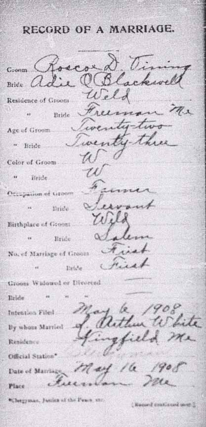
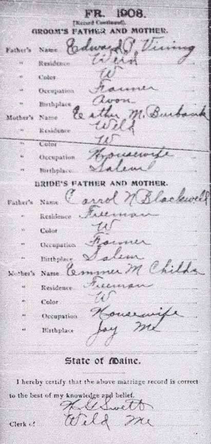

Marriage Data
Marriage record for Roscoe Dyar Vining and Addie Ora Blackwell:

Census Data
| 1910 | 1920 | 1930 | 1940 | |
| Roscoe Dyar Vining | 24 | 33 | 44 | 54 |
| Addie Ora (Blackwell) Vining | 25 | 35 | 45 | dead |
| Clarissa Hester (Ellsworth) Vining | ||||
| Mabel Addie Vining | 1 | 10 | 20 | married and living in separate household |
| Marion E. Vining | 2 | 11 | 22 | |
| infant son Vining | dead |